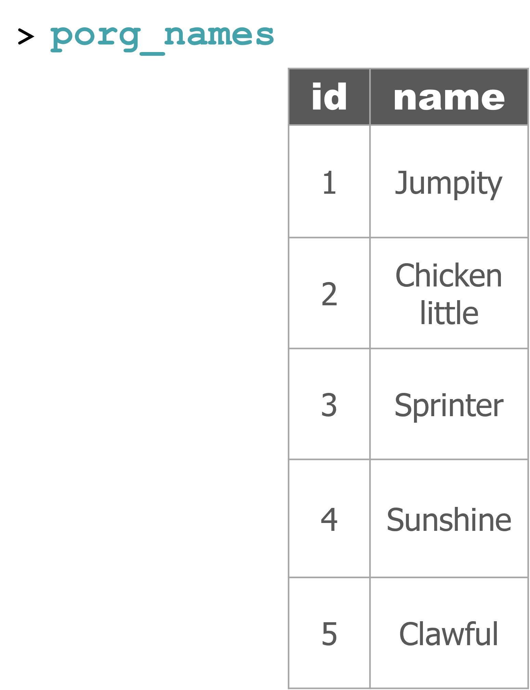

Good morning, Jedis!

Below is an example workflow for an R project:
data folder in your project directorylibrary(readr)
# Read the file from your data folder
##air_data <- read_csv("data/OZONE_samples_demo.csv")
# Read the file from online
air_data <- read_csv("https://itep-r.netlify.com/data/OZONE_samples_demo.csv")| SITE | Date | OZONE | TEMP_F |
|---|---|---|---|
| 27-137-7554 | 2016-08-11 | 19 | 71.6 |
| 27-137-7001 | 2017-10-30 | 7 | 41.0 |
| 27-137-7001 | 2017-09-17 | 9 | 67.4 |
| 27-137-7001 | 2018-07-16 | 10 | 71.0 |
| 27-137-7001 | 2017-10-29 | 5 | 40.4 |
library(janitor)
# Capital letters and spaces make things more difficult
# Let's clean them out
air_data <- clean_names(air_data)Hint:
summary(),glimpse(),nrow(),names()
# glimpse shows the firstfew records of every column
glimpse(air_data)## Rows: 1,237
## Columns: 16
## $ site <chr> "27-137-7001", "27-137-7001", "27-137-7001", "27-137-7001"…
## $ date <date> 2016-04-01, 2016-04-02, 2016-04-03, 2016-04-04, 2016-04-0…
## $ hour <dbl> 6, 3, 3, 2, 1, 2, 0, 1, 3, 0, 1, 2, 1, 2, 4, 0, 1, 0, 4, 4…
## $ ozone <dbl> 10.000, 14.000, 12.000, 13.000, 16.000, 0.018, 20.000, 14.…
## $ temp_f <dbl> 24.2, 35.6, 28.4, 37.4, 42.8, 49.4, 44.0, 44.6, 53.0, 51.8…
## $ state_code <dbl> 27, 27, 27, 27, 27, 27, 27, 27, 27, 27, 27, 27, 27, 27, 27…
## $ county_code <dbl> 137, 137, 137, 137, 137, 137, 137, 137, 137, 137, 137, 137…
## $ site_num <dbl> 7001, 7001, 7001, 7001, 7001, 7001, 7001, 7001, 7001, 7001…
## $ latitude <dbl> 47.52336, 47.52336, 47.52336, 47.52336, 47.52336, 47.52336…
## $ longitude <dbl> -92.5363, -92.5363, -92.5363, -92.5363, -92.5363, -92.5363…
## $ time <dttm> 1899-12-31 06:00:00, 1899-12-31 03:00:00, 1899-12-31 03:0…
## $ parameter <dbl> 88101, 88101, 88101, 88101, 88101, 88101, 88101, 88101, 88…
## $ year <dbl> 2016, 2016, 2016, 2016, 2016, 2016, 2016, 2016, 2016, 2016…
## $ month <dbl> 4, 4, 4, 4, 4, 4, 4, 4, 4, 4, 4, 4, 4, 4, 4, 4, 4, 4, 4, 4…
## $ day <chr> "01", "02", "03", "04", "05", "06", "07", "08", "09", "10"…
## $ units <chr> "PPB", "PPB", "PPB", "PPB", "PPB", "PPM", "PPB", "PPB", "P…library(ggplot2)
ggplot(air_data, aes(x = temp_f, y = ozone)) +
geom_point(aes(color = site), alpha = 0.4, size = 5)
library(dplyr)
# Drop values out of range
air_data <- air_data %>% filter(ozone > 0, temp_f < 120)
# Convert all samples to PPB
air_data <- air_data %>%
mutate(OZONE = ifelse(units == "PPM", ozone * 1000,
ozone)) ggplot(air_data, aes(x = temp_f, y = ozone)) +
geom_point(alpha = 0.2, size = 3) +
geom_smooth(method = "lm") +
facet_wrap(~site) +
labs(title = "Ozone tends to increase with temperature",
subtitle = "Observations for 2015-2017",
caption = "Source: MPCA air monitoring network")
Keep exploring…
air_data <- air_data %>%
group_by(site, year) %>%
summarize(avg_ozone = mean(ozone) %>% round(2),
avg_temp = mean(temp_f) %>% round(2))| site | year | avg_ozone | avg_temp |
|---|---|---|---|
| 27-137-7001 | 2016 | 11.01 | 60.74 |
| 27-137-7001 | 2017 | 11.26 | 60.66 |
| 27-137-7001 | 2018 | 11.54 | 60.59 |
| 27-137-7554 | 2016 | 12.23 | 61.23 |
| 27-137-7554 | 2017 | 11.81 | 60.98 |
| 27-137-7554 | 2018 | 12.87 | 61.02 |
Save the data table
write_csv(air_data, "results/2015_2017_ozone_summary.csv")The poggle of porgs has returned to help review the dplyr functions. Follow along by reading the porg data from the URL below.
library(readr)
porgs <- read_csv("https://mn-r.netlify.com/data/porg_data.csv")


The Ewoks say it’s unsafe to land. Booo… Sounds like the Empire is checking all ships for licenses.
Lucky for us there is some good news. They say for a small ship like ours, it is possible to land undetected. But we’ll have to put down right-dab in the middle of the 3 northern outposts.
Are you up for a challenge data droid?
Either way, let’s make a map to see what we’re up against. To help, our comrades sent along the coordinates of the Empire’s outposts. Guess what the first step is? That’s right. Time to add a new package.
sfsf package.
SF makes maps and spatial analysis in R feel like you’re working with regular table data. It’s full of spatial functions for calculating distances and areas, adding buffers around points, and all the handy dplyr toolbox functions will work as well.
Let’s get it!
sfinstall.packages("sf")To read coordinates stored in a spreadsheet or CSV, we can read them into R with our usual friends read_csv() and read_excel().
Endor still uses ancient data systems and their spatial data is in a format known as shapefiles.
But don’t worry, we can do it all with SF’s st_read() function.
data in your project folder.endor_outposts.zip file into the folder.Extract All... >> Click Extract.st_read().library(sf)
library(dplyr)
outposts <- st_read("data/endor_outposts/endor_outposts.shp")outposts## Simple feature collection with 3 features and 3 fields
## Geometry type: POINT
## Dimension: XY
## Bounding box: xmin: -1838045 ymin: 4374497 xmax: -1830923 ymax: 4383353
## Projected CRS: NAD83 / UTM zone 15N
## # A tibble: 3 × 4
## ID x_utm y_utm geometry
## <chr> <dbl> <dbl> <POINT [m]>
## 1 1NO -1831087. 4383353. (-1831087 4383353)
## 2 1NL -1830923. 4374497. (-1830923 4374497)
## 3 3NB -1838045. 4378301. (-1838045 4378301)glimpse(outposts)## Rows: 3
## Columns: 4
## $ ID <chr> "1NO", "1NL", "3NB"
## $ x_utm <dbl> -1831087, -1830923, -1838045
## $ y_utm <dbl> 4383353, 4374497, 4378301
## $ geometry <POINT [m]> POINT (-1831087 4383353), POINT (-1830923 4374497), POINT (-1…st_coordinates(outposts)## X Y
## 1 -1831087 4383353
## 2 -1830923 4374497
## 3 -1838045 4378301To make a quick map, use ggplot and add + geom_sf().
library(ggplot2)
ggplot(outposts) +
geom_sf(size = 8, color = "steelblue") 
Try running the function st_distance() on your outposts.
What do you get?
st_centroid() function can find it:# First- Combine all outposts into one object
outposts_combined <- st_combine(outposts)
# Then - get the objects center
land_pad <- st_centroid(outposts_combined)# View center coordinates
land_pad| geometry |
|---|
| POINT (-1833352 4378717) |
That’s fantastic.
But there’s one more piece of bad news… These coordintes are in a different Coordinate Reference System (CRS) than our ship needs. CRS is a real thing!
The Endor outposts are currently in the UTM coordinate system, but our ship requires coordinates in WGS84 Lat/Lng.
(45.6, -93.12).The SF package will help with coordinate conversions as well. Try using st_transform() and set the crs argument to: crs = 4326.
# Transform outposts
outposts <- st_transform(outposts, crs = 4326)
# Transform landing pad
land_pad <- st_transform(land_pad, crs = 4326)In Minnesota, you’ll often receive coordinates with the CRS set to UTM Zone 15N. This is CRS number 26915. See https://epsg.io/26915.
We’re going to need to be very precise to land perfectly in between these outposts. To make our captain really happy, let’s put this all in an interactive zoomable map. For interactive maps we use leaflet.
leaflet package.
Leaflet makes interactive maps easy and you build them up in layers similar to a ggplot.
leafletinstall.packages("leaflet")Leaflet builds map with layers similar to ggplot, but instead of adding things with the +, leaflet adds new layers with the %>% (“the pipe”).
library(leaflet)
leaflet(outposts) %>%
addCircles(radius = 250) %>%
addTiles()Fingers crossed it’s in the middle….
leaflet(outposts) %>%
addCircles(radius = 300) %>%
addTiles() %>%
addMarkers(data = land_pad) #<<Try hovering over one of the outposts to see its label.
leaflet(outposts) %>%
addCircles(radius = 300,
label = ~ID) %>% #<<
addTiles() %>%
addMarkers(data = land_pad,
label = "Land HERE!", #<<
labelOptions = labelOptions(noHide = T)) #<<News just came in that the outposts will soon be upgrading their radar to detect ships up to 4,200 meters away. Will that be a problem?
Steps
st_buffer() to add a 4,200 meter ring around each outpost.
outposts_new <- st_buffer(outposts, dist = 4200)addPolygons() with data = outposts_new.radius = 300 argument.outposts_new <- st_buffer(outposts, dist = 4200)
leaflet(outposts) %>%
addCircles(label = ~ID) %>%
addTiles() %>%
addMarkers(data = land_pad,
label = "Land HERE???",
labelOptions = labelOptions(noHide = T)) %>%
addPolygons(data = outposts_new, #<<
fillColor = "yellow") #<<Will our landing spot still be safe?
You’re on 🔥 fire data droid. Let’s sit here a minute to cool down…
Ok, now let’s go land on that planet before we get stuck up here with permanent space legs.
The Ewoks need our help. There’s porgs EVERYWHERE!

They have been spreading across the galaxy, hitching rides on unsuspecting ships. They’re so cute people hate to admit it, but they are starting to become a nuisance. To get a grasp on the problem the Ewoks are doing the first ever porg survey. And they need your help scheduling the survey dates.
lubridatelubridate package.
It’s about time! Lubridate makes working with dates much easier.
We can find how much time has elapsed, add or subtract days, and find seasonal and day of the week averages.
lubridateinstall.packages("lubridate")
View the date cheatsheet HERE.
It’s a great reference when you need to manipulate dates or timezones in your data.

Ewoks are very busy. Unfortunately, they only have one day per week when they can volunteer.
Here is the weekday when volunteers are available at each location:
ThursdaysFridaysWe can use the seq.Date() function and the option to step by = "week" to
generate the survey dates for each site. But we need to know which day to start from.
when is the first Thursday in May of 2023?
For that, we can use the wday(), the “weekday” function.
# wday tells you the day of week (Sun, Mon, etc..) for a specific date
wday(ymd('2023-05-01'), label = TRUE, abbr = FALSE)## [1] Monday
## 7 Levels: Sunday < Monday < Tuesday < Wednesday < Thursday < ... < SaturdaySo the 1st of May will be a Monday. That means…. May the 4th will be a Thursday. Perfect! That’s my favorite day.
We really don’t want to check every date one by one do we?
Let’s add a new week_day column to our survey table that checks ALL the dates ALL at once. To add a new column we call our friend mutate().
Complete the code below to add a week_day column.
survey <- mutate(survey,
week_day = wday( ________ , label = TRUE, abbr = FALSE))filter() week daysFilter allows us to pick out only the days of the week we want.
Split the schedule in two by filtering the survey to only the week day needed for each site:
Thursday for Bright TreeFriday for Fern Gullybright_dates <- filter(survey, week_day == ________ )
fern_dates <- filter(survey, week_day == ________ )bright_dates <- filter(survey, week_day == "Thursday" )
fern_dates <- filter(survey, week_day == "Friday" )How many survey dates are at each site?
Hint: It’s less than 50.
26 survey days

Oh no! Each survey site has a very-very particular Assistant to the Regional Manager. And they are demanding a very specific date format for their work schedules.
Before you send off the survey dates, you’ll need to adjust the dates to match the requested formats below.
Preferred date formats
5-11-2023May 12, 2023Use format(count_date, ...) and the date expressions below to format the schedule for each region accordingly.
For example:
format(count_date, "%b, %Y")prints the date asAug, 2023.
%bstands for 3-letter month abbreviation%Y%stands for the full 4 digit year
| Expression | Description | Example |
|---|---|---|
%Y |
Year (4 digit) | 2023 |
%y |
Year (2 digit) | 21 |
%B |
Month (full name) | December |
%b |
Month (abbreviated) | Dec |
%m |
Month (decimal number) | 12 |
%d |
Day of the month (decimal number) | 30 |
| Expression | Description | Example |
|---|---|---|
%H |
Hour | 8 |
%M |
Minute | 13 |
%S |
Second | 35 |
Use mutate() to update the week_day column in both site schedules.
Here’s a start
# Set date format to 5-11-2023
bright_dates <- mutate(bright_dates, count_date = format(count_date, _______ ))
# Set date format to May 12, 2023
fern_dates <- mutate(fern_dates, count_date = format(count_date, _______ ))# Set date format to 5-11-2023
bright_dates <- mutate(bright_dates, count_date = format(count_date, "%m-%d-%Y"))
# Set date format to May 12, 2023
fern_dates <- mutate(fern_dates, count_date = format(count_date, "%b %d, %Y"))# Bright Tree schedule
head(bright_dates, 3)| count_date | week_day |
|---|---|
| 05-04-2023 | Thursday |
| 05-11-2023 | Thursday |
| 05-18-2023 | Thursday |
# Fern Gully schedule
head(fern_dates, 3)| count_date | week_day |
|---|---|
| May 05, 2023 | Friday |
| May 12, 2023 | Friday |
| May 19, 2023 | Friday |
Congrats!
Your fine-tuned schedules worked perfectly.
Now let’s jump ahead and take a look at the survey results.

porgs <- read_csv("https://mn-r.netlify.app/data/2022_porg_survey_results.csv") Explore a bit.
Are there missing values?
It looks like we have a slight missing data problem.
There’s a data point in the results that wasn’t labeled with the site location. We do know the date however.
On 2023-06-30 there were a whopping 7 porgs counted - but we just don’t know where.
Can you determine the site based on the date of the porg count?
mystery_site_date <- "2023-06-30"Hint: What weekday is this?
Try the
wday(date)function.
Good sleuthing data droid.
We’ll learn how to update the site value later today, but right now we’re in a hurry, so let’s remove the row using filter.
Use filter() to keep only the rows in the porgs data where site is NOT NA (missing).
porgs <- filter(porgs, !is.na(site)) What is the best month to see porgs?
First, add a month column to the data with the function month() and the column count_date.
porgs <- porgs %>%
mutate(month = month(count_date))Next, use ggplot() and geom_col() to plot the porg sightings by month.
ggplot(porgs, aes(x = month, y = ______ , fill = site)) +
geom_col()ggplot(porgs, aes(x = month, y = porg_count, fill = site)) +
geom_col()
Why might June be the lowest month?
Hint: Fern Gully
Plot all the data with geom_point(). Put count_date on the x-axis, and the porg_count on the y-axis. Set the color to match the site column.
ggplot(porgs, aes(x = _______, y = ______ , color = _____ )) +
geom_point(size = 5)ggplot(porgs, aes(x = count_date, y = porg_count, color = site)) +
geom_point(size = 5) 
Oof! That’s a busy plot. Try adding + facet_wrap("site") to the end.
What happens?
ggplot(porgs, aes(x = count_date, y = porg_count, color = site)) +
geom_point(size = 5) +
facet_wrap("site") #<<Try adding + geom_line().
ggplot(porgs, aes(x = count_date, y = porg_count, color = site)) +
geom_point(size = 5) +
facet_wrap(~ site) +
geom_line() #<<The Ewoks were impressed and deeply thankful. They will be in touch for Porg Survey 2024.

A %>% BWishing you could type the name of the data less often?

Use the %>% to chain functions together and make our scripts more streamlined.
%>% helps:#1: Eliminate nested parenthesesLet’s say you have 3 numbers. Your analysis requires that you take the sum of them, then take the log of that result, and then round the final outcome.
round(log(sum(c(10, 20, 30, 50))))The code above is dense and we need to read it backwards from right to left to understand the order of operations. The pipe on the other hand allows us to read the code from left to right.
result <- c(10, 20, 30, 50) %>% sum() %>% log() %>% round()#2: Combine processing steps into one cohesive chunkscrap <- arrange(scrap, desc(price_per_pound))
scrap <- filter(scrap, origin != "All")
scrap <- mutate(scrap,
scrap_finder = "BB8",
measure_method = "REM-24")scrap <- scrap %>%
arrange(desc(price_per_pound)) %>%
filter(origin != "All") %>%
mutate(scrap_finder = "BB8",
measure_method = "REM-24")Similar to above, use the %>% to combine the two analysis lines below.
# Filter to only magnetic_field measurements
mag_endor <- filter(air_endor, analyte == "magnetic_field")
# Add a date column to the filtered data
mag_endor <- mutate(mag_endor, date = mdy(start_run_date))%>% guide you.Wait…. So where’s Finn?
That’s enough scuttlebutting around, Finn needs us back on Jakku. We’re going to have to get better at our roll call procedure. Here we come Finn. Blast off!

Okay, so we’re back on this ol’ dust bucket planet. Let’s try not to forget anyone this time. Data droid, let me know if anyone goes missing.
Mr. Baddy Plutt is demanding 10,000 items of scrap for Finn. Sounds expensive, but lucky for us he didn’t clarify the exact items. Let’s find the scrap that weighs the least per shipment and try to make this transaction as light as possible.
BB8 was busy on our flight back to Jakku, and recovered a full set of scrap records from the notorious Unkar Plutt. Let’s take a look.
library(readr)
library(dplyr)
# Read in the full scrap database
scrap <- read_csv("https://itep-r.netlify.com/data/starwars_scrap_jakku_full.csv")Take a look at the NEW scrap data and see if we have the weight of all the items.
# What unit types are in the data?
unique(scrap$units)## [1] "Cubic Yards" "Items" "Tons"Or return results as a data frame
distinct(scrap, units)## # A tibble: 3 × 1
## units
## <chr>
## 1 Cubic Yards
## 2 Items
## 3 TonsHmmm…. So how much does a cubic yard of Hull Panel weigh?
A lot? 32? Maybe…
I think we’re going to need some more data.
“Hey BB8!”
“Do your magic data finding thing.”
It took a while, but with a few droid bribes BB8 was able to track down a Weight conversion table from his droid buddies. Our current data shows the total cubic yards for some scrap shipments, but not how much the shipment weighs.
# The data's URL
convert_url <- "https://rtrain.netlify.com/data/conversion_table.csv"
# Read the conversion data
convert <- read_csv(convert_url)
head(convert, 3)## # A tibble: 3 × 3
## item units pounds_per_unit
## <chr> <chr> <dbl>
## 1 Bulkhead Cubic Yards 321
## 2 Hull Panel Cubic Yards 641
## 3 Repulsorlift array Cubic Yards 467Oh my stars! A cubic yard of Hull Panel weighs 641 lbs. I knew it!
Let’s join this new conversion table to the scrap data to make our calculations easier. To do that we need to meet a new function.
Say Hello to our friend left_join()!

left_join(scrap, convert, by = c("columns to join by"))
Left join works like a zipper to combine 2 tables based on one or more variables. It’s called “left”-join because the entire table on the left side is retained.
Anything that matches from the right table gets to join the party, but any rows that don’t have a matching ID will be ignored.
Remember our porg friends? How rude of us not to share their names.
Here’s a table of their names.

But who’s who? Let’s join their names to the rest of the data based on the
IDcolumn.


left_join() adds columns to your table by pulling them from another table. Imagine you have the 2 Star Wars tables below. One table includes character names and heights; the second has names and homeworlds. Since both tables share a common name column, we can join the tables together using the name columns as the joining key.
starwars_heights
| starwars_name | height |
|---|---|
| Luke Skywalker | 172 |
| C-3PO | 167 |
| Darth Vader | 202 |
| Leia Organa | 150 |
| Greedo | 246 |
starwars_homeworlds
| starwars_name | homeworld |
|---|---|
| Luke Skywalker | Tatooine |
| C-3PO | Tatooine |
| Darth Vader | Tatooine |
| Leia Organa | Alderaan |
| Ayla Secura | Ryloth |
Uh oh. There’s no “Ayla Secura” in the height table and there’s no “Greedo” in the homeworld table. Can we still join the tables? Run the code below to see what happens.
library(dplyr)
# Create new tables
starwars_heights <- data_frame(starwars_name = c("Luke Skywalker", "C-3PO", "Darth Vader", "Leia Organa", "Greedo"),
height = c(172, 167, 202, 150, 246))
starwars_homeworlds <- data_frame(starwars_name = c("Luke Skywalker", "C-3PO", "Darth Vader", "Leia Organa", "Ayla Secura"),
homeworld = c("Tatooine", "Tatooine", "Tatooine", "Alderaan", "Ryloth"))
# Join the tables together by starwars_name
## Tell left_join which columns to use as the key with:
## by = c("key_left" = "key_right")
height_and_homeworld <- left_join(starwars_heights, starwars_homeworlds,
by = c("starwars_name" = "starwars_name"))
height_and_homeworld| starwars_name | height | homeworld |
|---|---|---|
| Luke Skywalker | 172 | Tatooine |
| C-3PO | 167 | Tatooine |
| Darth Vader | 202 | Tatooine |
| Leia Organa | 150 | Alderaan |
| Greedo | 246 | NA |
When left_join adds the homeworlds column to the starwars_heights table it only adds a value for the characters when the tables have a matching character name. When R couldn’t find “Greedo” in the homeworld table, the Star Wars character’s homeworld was recorded as missing or NA.

Now imagine the table starwars_homeworld has two records for C-3PO, each with a different homeworld listed.
What will happen when you join the two tables?
starwars_heights
| starwars_name | height |
|---|---|
| Luke Skywalker | 172 |
| C-3PO | 167 |
| Darth Vader | 202 |
| Leia Organa | 150 |
| Greedo | 246 |
starwars_homeworlds
| starwars_name | homeworld |
|---|---|
| Luke Skywalker | Tatooine |
| C-3PO | Tatooine |
| C-3PO | Tantive IV |
| Darth Vader | Tatooine |
| Leia Organa | Alderaan |
| Ayla Secura | Ryloth |
When you run the code below you’ll see that left_join is very thorough and adds each additional homeworld it finds for C-3PO as a new row in the joined table.
# Create new tables
starwars_heights <- data_frame(starwars_name = c("Luke Skywalker", "C-3PO", "Darth Vader", "Leia Organa", "Greedo"),
height = c(172, 167, 202, 150, 173))
starwars_homeworlds <- data_frame(starwars_name = c("Luke Skywalker", "C-3PO", "C-3PO", "Darth Vader", "Leia Organa", "Ayla Secura"),
homeworld = c("Tatooine", "Tatooine", "Tantive IV", "Tatooine", "Alderaan", "Ryloth"))
# Join the tables together by Star Wars character name
height_and_homeworld <- left_join(starwars_heights, starwars_homeworlds)
# Check number of rows
nrow(height_and_homeworld)
height_and_homeworld| starwars_name | height | homeworld |
|---|---|---|
| Luke Skywalker | 172 | Tatooine |
| C-3PO | 167 | Tatooine |
| C-3PO | 167 | Tantive IV |
| Darth Vader | 202 | Tatooine |
| Leia Organa | 150 | Alderaan |
| Greedo | 173 | NA |
This results in a table with one extra row than we started with in our heights table. So growing table sizes are a sign of duplicate records when using left_join().
In practice, when you see this you’ll want to investigate why one of your tables has duplicate entries, especially if the observations for the two rows are different – as it was for C-3PO’s homeworld.
Are there really two different Star Wars characters named C-3PO, or did someone make two different guesses about the droid’s homeworld? Or maybe the data simply has a mistake? It happens.
Let’s apply our new left_join() skills to the scrap data.
First, let’s re-read the full scrap data.
library(readr)
library(dplyr)
# Read in the larger scrap database
scrap <- read_csv("https://itep-r.netlify.com/data/starwars_scrap_jakku_full.csv")
# what units types are in the data?
distinct(scrap, units)## # A tibble: 3 × 1
## units
## <chr>
## 1 Cubic Yards
## 2 Items
## 3 TonsLook at the tables. What columns in both tables do we want to join by?
names(scrap)Let’s join by item and units.
# Join the scrap to the conversion table
scrap <- left_join(scrap, convert,
by = c("item" = "item",
"units" = "units"))Want to save on typing?
left_join() will automatically search for matching columns if you don’t use the by= argument. So if you know 2 tables share a column name you don’t have to specify how to join them. The code below does the same as above.
scrap <- left_join(scrap, convert)
head(scrap, 4)## # A tibble: 4 × 8
## receipt_date item origin desti…¹ amount units price…² pound…³
## <chr> <chr> <chr> <chr> <dbl> <chr> <dbl> <dbl>
## 1 4/1/2013 Bulkhead Crate… Raiders 4017 Cubi… 1005. 321
## 2 4/2/2013 Starship sensor array Outsk… Trade … 1249 Cubi… 1129. 637
## 3 4/3/2013 Starship sensor array Outsk… Niima … 4434 Cubi… 1129. 637
## 4 4/4/2013 Hull Panel Crate… Raiders 286 Cubi… 843. 641
## # … with abbreviated variable names ¹destination, ²price_per_pound,
## # ³pounds_per_unitFor more details on the join family of functions, you can type ?left_join to see all the arguments and options.
Let’s mutate()!
Now that we have pounds per unit we can use mutate to calculate the total pounds for each shipment.
Fill in the blank
scrap <- scrap %>%
mutate(total_pounds = amount * _____________ )
scrap <- scrap %>%
mutate(total_pounds = amount * pounds_per_unit)We need to do some serious multiplication. We now have the total amount shipped in pounds, and the price per pound, but we want to know the total price for each transaction.
How do we calculate that?
# Calculate the total price for each shipment
scrap <- scrap %>%
mutate(credits = ________ * ________ )
We need to do some serious multiplication. We now have the total amount shipped in pounds, and the price per pound, but we want to know the total price for each transaction.
How do we calculate that?
# Calculate the total price for each shipment
scrap <- scrap %>%
mutate(credits = total_pounds * ________ )
We need to do some serious multiplication. We now have the total amount shipped in pounds, and the price per pound, but we want to know the total price for each transaction.
How do we calculate that?
# Calculate the total price for each shipment
scrap <- scrap %>%
mutate(credits = total_pounds * price_per_pound)
Great! Let’s add one last column. We can divide the shipment’s credits by the amount of items to get the price_per_unit.
# Calculate the price per unit
scrap <- scrap %>%
mutate(price_per_unit = credits / amount)